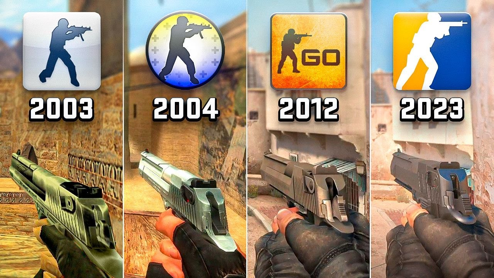
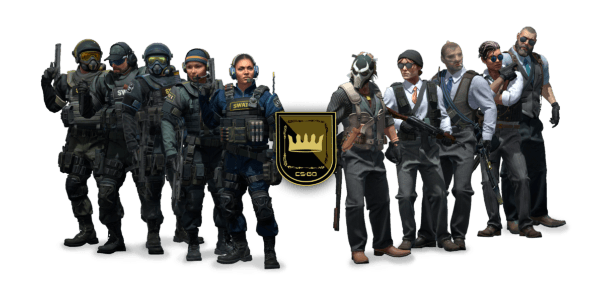

Counter-Strike: Global Offensive
Durante las dos últimas décadas, Counter‑Strike ha proporcionado una experiencia competitiva de primer nivel para los millones de jugadores de todo el mundo que contribuyeron a darle forma.


Counter-Strike: Global Offensive (CSGO) es un videojuego de disparos desarrollado por Valve Corporation en cooperación con Hidden Path Entertainment, y es el cuarto juego de la saga Counter-Strike.